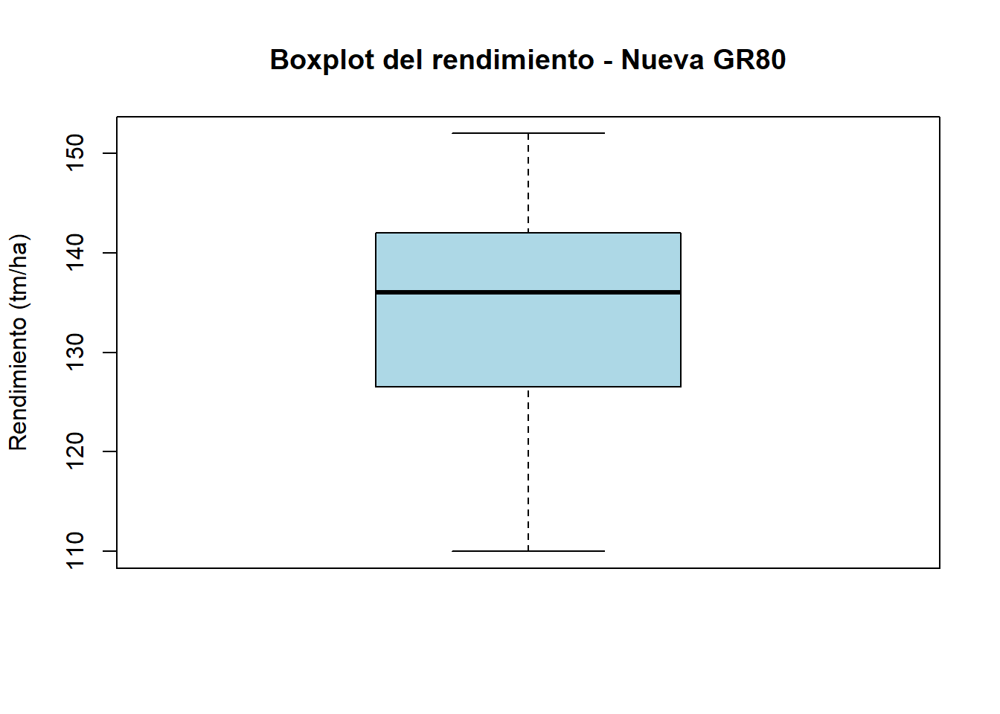

nueva_gr80 <- c(
110, 112, 135, 140, 128, 132, 123, 125, 140, 142,
151, 113, 142, 123, 118, 143, 138, 135, 140, 135,
112, 128, 152, 136, 152, 139, 142, 129, 150, 135,
119, 128, 123, 142, 138, 145, 136, 147, 141, 137
)ejercicio4.3_R_1
Primero cargamos los datos correspondientes al híbrido Nueva GR80.
#Para datos puros
2. Media y varianza
mean(nueva_gr80)[1] 133.9var(nueva_gr80)[1] 130.81034. Boxplot
boxplot(
nueva_gr80,
main = "Boxplot del rendimiento - Nueva GR80",
ylab = "Rendimiento (tm/ha)",
col = "lightblue"
)
Repitan el procedimiento anterior para el híbrido Overa.
overa <- c(
115, 158, 139, 143, 151, 152, 148, 139, 153, 125, 136,
129, 146, 136, 140, 150, 140, 139, 128, 129, 125, 130,
140, 149, 150, 139, 142, 138, 129, 126, 137, 148, 146,
150, 158, 153, 119, 139, 154, 139, 151, 154, 139, 132
)0 Luego comparen ambos híbridos considerando:
- centro de la distribución: media y mediana;
- variabilidad: varianza y MAD;
- forma de la distribución observada en los histogramas;
- presencia de valores extremos en los boxplots.